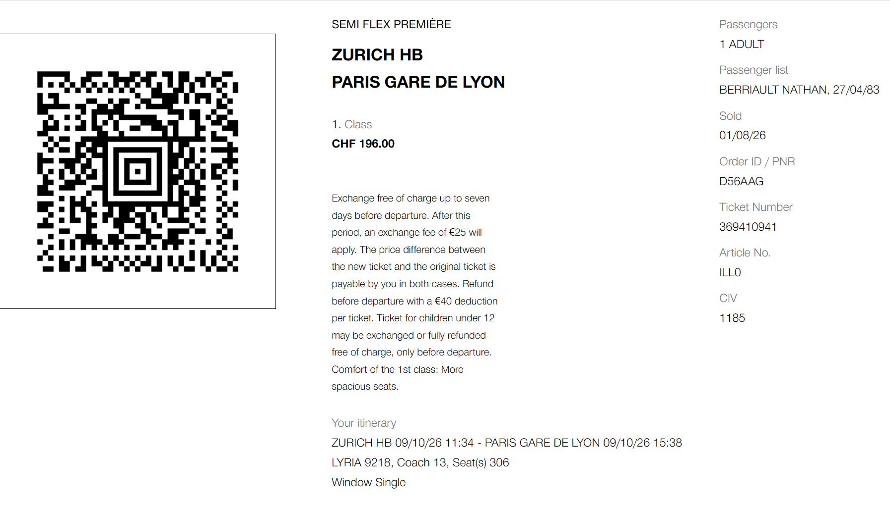
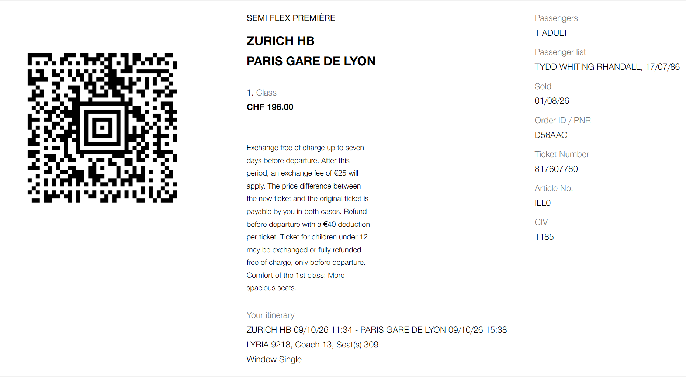
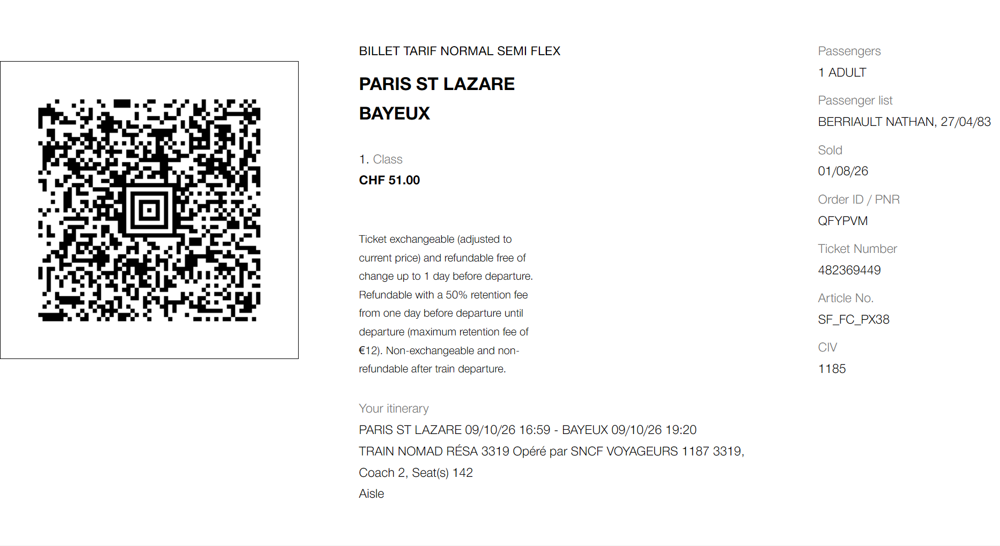
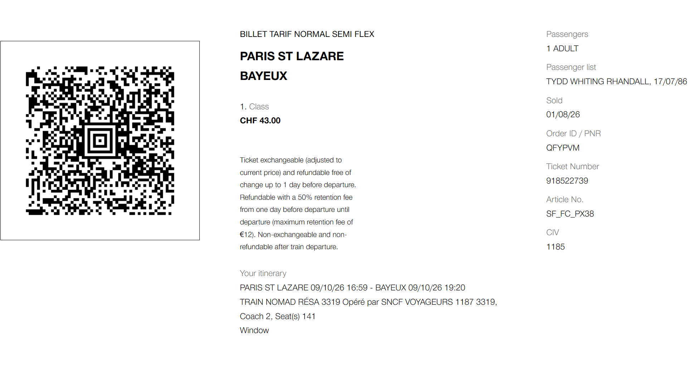

CHECK-IN Wed Oct 7 @ 3pm
Motel One Zurich
Stockerstrasse 61, Zürich, 8002 Switzerland
Map
Expedia: 73511295731452
+ 1 room (special)
Cancel: Tue Oct 6 @ 6pm (free)
Check-out: Fri Oct 9 @ noon
DEPARTURE Fri Oct 10 @ 11:34am
Zurich HB -> Paris Gare de Lyon
Bahnhofplatz, 8001 Zürich, Switzerland
MAP
Platform: 15
LYRIA 9218
+ 1st class
Wagon: 13
Seats: 306, 309
DEPARTURE @ 4:59pm (
Paris-St-Lazare -> Bayeux
13 Rue d'Amsterdam, 75008 Paris, France
or?? Pl. Louis Armand, 75012 Paris, France
Directions
Train Nomad Resa 3319
+ 1st class
Coach: 2
Seats: 141,2



